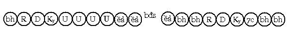

Bài 18 LỘ NHẬP THIỀN QUẢ. I. ĐỊNH NGHĨA Vị Thánh muốn hưởng Níp-Bàn lạc đã chứng được, an trú vào định nhập để hưởng giải thoát lạc (vimuttisukha) ấy. Tiến trình diễn hoạt của tâm thức trong thời gian này, gọi là tâm lộ nhập Thiền quả (tức là thiền Siêu thế). II. PHÂN TÍCH Về hình thức thì thiền Chỉ tịnh và thiền Quả giống nhau, tức là Thiền giả (jhānalābhī) đều an trú trong định nhập với thời gian mà mình muốn, nhưng về nội dung thì sai biệt. Thiền giả Chỉ tịnh an trú với tâm thiền mà mình đã chứng với cảnh Quang tướng chế định, trái lại bậc Thánh an trú trong Níp-Bàn cảnh với tâm Quả Siêu thế. Thiền Chỉ tịnh là thiền hiệp thế (lokiyajhāna), còn thiền Quả là thiền Siêu thế (lokuttarajhāna). Biểu đồ tâm lộ an trú trong thiền Quả như sau: Người độn căn:  Người lợi căn:
Ký hiệu: ềả: thiền Quả (phalajhāna). Lộ này có được: - Sát-na: Vô số sát-na tâm khách. III. LÝ GIẢI. 1. Diễn tiến. Trước khi nhập Quả định, vị Thánh phải chú nguyện: "Siêu thế pháp nào mà tôi đã chứng đắc, hãy khởi lên trong tôi trong suốt thời gian... Trong suốt thời gian đó, xin cho hữu vi cảnh vắng mặt." Đây là việc phải làm trước tiên của vị Thánh. Sau khi chú nguyện xong, vị Thánh tác ý quán Tứ Niệm xứ để ghi nhận danh sắc nội thân, tuần tự tiến lên đến Hành xả tuệ (saṅkhārupekkhāñāṇa) khi năm quyền đồng đẳng, phát sanh Thuận thứ tuệ (anulomañāṇa), dứt tuệ Thuận thứ vị nhập vào Quả Định. Vài vị Giáo Thọ sư bảo rằng: "Chỉ có bậc Tam quả và bậc Tứ quả mới nhập Quả định, còn bậc Dự lưu và bậc Nhất lai không thể an trú trong Quả định". Bậc Sơ và Nhị quả chỉ viên mãn Giới, nhưng Định còn khiếm khuyết. Bậc Tam quả thì Giới và Định đã viên mãn, tuệ còn khiếm khuyết. Bậc Tứ quả thì Giới - Định - Tuệ đều viên mãn. Do định viên mãn nên bậc Tam - Tứ quả nhập được quả Định, do định còn khiếm khuyết nên bậc Sơ - Nhị quả không thể nhập Quả định. Đây là ý kiến của những vị Giáo Thọ sư ấy, nhưng luận cứ này đã bị các vị A Xà Lê khác bác bỏ, rằng: "Chúng ta đều biết ngay cả phàm phu cũng an trú được trong định thế gian (lokiyasamādhi) khi họ làm chủ được loại định ấy. Vậy vì sao vị Thánh không an trú được trong định Siêu thế khi vị ấy làm chủ được loại định này?". Vì mục đích nào các bậcThánh an trú vào Quả Định? Để được hiện tại lạc trú, như Đức vua hưởng Vương lạc mà mình có, chư thiên hưởng thiên lạc, các bậc Thánh cũng nghĩ rằng: Ta sẽ an hưởng Thánh lạc Siêu thế. 2. Về bốn sát-na Thuận thứ trong lộ nhập Quả Định. Khác với lộ phàm định (lokiyasamāpatti vīthi) lộ nhập Quả Định (phalasamāpattivīthi) bốn sát-na đổng lực Dục giới đều chỉ mang 1 tên là Thuận thứ. Có hai lý do: a) Mục đích của Thiền giả. Đối với phàm định Thiền giả có mục đích an trú trong phàm lạc, nhận cảnh là chế định, nên tâm có sự "vướng mắc" với phàm lạc, do đó để đạt được mục đích này, những tâm đổng lực dục giới phải thực thi phận sự riêng để đạt đến mục đích, thế là phải có Chuẩn bị, Cận hành, Thuận thứ và phải Chuyển tánh (như đã giải ở lộ nhập thiền). Đối với Thánh định, vị Thánh muốn hưởng lạc Siêu thế, không "vướng mắc" lạc thế gian, nên chỉ cần Thuận thứ dẫn nhập theo phận sự "thuận theo" đạt đến Níp-Bàn cảnh là đủ. b) Loại tâm. Các đổng lực Chuẩn bị, Cận hành và Chuyển tánh chỉ khởi lên khi có đổng lực An chỉ cùng giống. Vì sao vậy? Vì đó là "ngõ ra" của các đổng lực này. Các tâm thiền hiệp thế hoặc giống thiện (kusalajāti) hoặc giống Hạnh (kriyājāti) nên trong lộ đắc hay nhập thiền hiệp thế thì tâm thiền là "ngõ ra" vì cùng giống, trong lộ đắc Đạo thì tâm Đạo là "ngõ ra" vì cùng giống. Tâm thiền Quả là loại tâm Quả Siêu thế, thuộc giống quả (vipākajāti), nên các sát-na Chuẩn bĩ, Cận hành, Chuyển tánh không thể sanh lên vì không có "ngõ ra" (khác giống), chỉ có sát-na Thuận thứ là phù hợp, vì sát-na này có phận sự "chìu theo" cảnh hữu vi (danh - sắc) lẫn cảnh vô vi (Níp-Bàn), để dẫn nhập tâm nhận Níp-Bàn làm cảnh. Mặt khác, vì Thuận thứ hòa đồng với sát-na trước và đổng lực An chỉ phía sau kế tiếp, bất luận là thiện, Hạnh hay Quả Siêu thế. Do vậy cả bốn sát-na này đều có tên là Thuận thứ. 3. Điều kiện để nhập thiền Quả. Vị Thánh muốn nhập Quả Định, vị ấy phải chứng đạt định Chỉ tịnh trước khi đắc Đạo. Nếu đạt được Sơ thiền rồi sau đó chứng Đạo, như Sơ Đạo chẳng hạn, vị ấy sẽ nhập Sơ Quả Sơ thiền, tức là tâm vị Thánh này an trú trong tầng Sơ thiền với tâm Sơ Quả sanh khởi liên tục trong thời gian nhập định. Giả như sau này, vị Thánh ấy tu tập Chỉ tịnh đắc được Nhị thiền mà chua chứng đắc Đạo cao hơn, khi nhập thiền Quả cũng chỉ nhập được Sơ Quả Sơ thiền mà thôi, không thể an trú trong Sơ quả Nhị thiền được. Do đó mới nói rằng "phải chứng đạt định Chỉ tịnh trước khi chứng Đạo". Tương tự như thế với các tầng thiền và tầng Thánh đạo. Vì sao phải chứng thiền Chỉ tịnh trước khi chứng Đạo, mới nhập được thiền Quả? Vì thiếu duyên cận hành. Chúng ta biết rằng " tâm Quả Siêu thế là kết quả của tâm Đạo, tâm Đạo như thế nào tâm Quả Siêu thế cũng như thế ấy, tâm Quả Siêu thế không thể thay đổi thành phần tâm sở (cetasika) hòa hợp được." Chúng ta hãy lấy hình ảnh tâm Quả Siêu thế Sơ thiền để xem xét. Tâm Quả Siêu thế Sơ thiền có năm chi thiền, nếu vị Thánh nhập Nhị thiền Quả định thì tâm Quả Siêu thế này chỉ có 4 chi thiền, điều này không thể xảy ra, còn như tâm Quả Siêu thế vẫn tròn đủ năm chi thiền thì tầng thiền này phải là tầng Sơ thiền. Có câu hỏi rằng: Vị Thánh Lạc quán (sukhavipassanā) có được tâm Quả Siêu thế với 5 chi thiền, vì sao lại không nhập được định Sơ quả Sơ thiền? Do tác ý của hành giả và duyên cận hành. - Do tác ý. Hành giả hành vipassanā với mục đích chứng đạt Níp-Bàn sát trừ phiền não, không phải an trú trong thiền lạc, trái lại mục đích của hành giả Chỉ tịnh là an trú trong thiền lạc. Do tác ý của hai cách tu tiến (Chỉ hoặc Quán) mà kết quả khác nhau. Tu tiến Chỉ tịnh, định tâm sở (ekaggatācetasika) được trí hổ trợ nên có sức mạnh áp chế được tham dục, phá vỡ "hàng rào cản" thể nhập vào thiền cảnh trọn vẹn, sau đó vị này chứng đắc Đạo, sức mạnh của định rất vững mạnh. Trái lại, hành giả tu Quán, định chỉ ở giai đoạn Cận định, lại phải hổ trợ cho trí sát trừ phiền não nên càng giảm sức mạnh trước "hàng rào cản", khi hành giả đắc Đạo, loại định này lại trở thành Quả trong tâm quả Siêu thế. Trước chưa phá vỡ "hàng rào cản" để an trú trong định thế gian, tất nhiên nay cũng không thể phá vỡ "hàng rào cản" để an trú trong định Siêu thế. Như vậy: định trong tâm quả Siêu thế lạc quán không có sức mạnh bằng định An chỉ trong tâm quả Siêu thế Sơ thiền và dĩ nhiên vị Thánh lạc quán không thể nhập thiền Quả định. - Do duyên cận hành. Tức là Cận y duyên (upanissayapaccaya), hành giả đắc thiền Chỉ tịnh trước, sau khi an trú trong thiền lạc, xuất thiền dùng An chỉ định làm nền tảng để quán Danh - sắc, khi đạt Đạo, Cận y duyên này có đủ sức mạnh giúp vị Thánh an trú trong Quả định, trái lại vị Lạc quán chỉ dùng Cận định (upacārasamādhi) làm nền tảng để quán sát danh sắc nội thân, khi đạt Đạo, Cận y duyên này chỉ đủ sức đưa tâm vị Thánh đến Cận định. Do đó vị Thánh Lạc quán không thể an trú trong Định quả Siêu Thế, mặc dù tâm Sơ quả có đủ năm chi thiền (tuy nhiên, ở truờng hợp đặc biệt do trí quá mạnh vị ấy vẫn có thể nhập được thiền Quả Sơ định). Mặt khác, đối với lộ nhập định Quả Siêu thế, Vị Thánh chỉ an trú trong Định Siêu thế với Quả cao nhất mình có, không an trú trong Quả thấp hơn. Như vị Tam quả chẳng hạn chỉ có lộ nhập thiền Tam quả, không thể có lộ thiền Sơ quả hay Nhị quả. Tóm lại: tâm lộ nhập thiền Quả có 2 điều: - Tầng thiền an trú là tầng thiền đạt được trước khi chứng Đạo Siêu
thế. 4. Số lượng tâm lộ. Có tất cả 40 lộ tâm nhập Quả định, cách tính như sau: Bốn tầng Thánh Quả nhân với 5 bậc thiền nhân với 2 hạng người (độn căn + lợi căn) thành 40 lộ. Sở dĩ nhân 5 bậc Thiền, vì vị Thánh nhập Quả định, phải lấy danh sắc làm cảnh trong tiến trình đạt đến Định quả. Do đó, tuy chứng đạt 4 thiền Vô Sắc, nhưng vị Thánh cũng phải dùng 2 chi thiền là Xả và Định để dẫn nhập vào Quả định, nên chỉ tính 5 bậc thiền mà thôi. -ooOoo- Ðầu trang | Mục lục | 01 | 02 | 03 | 04 | 05 | 06 | 07 | 08 | 09 | 10 | 11 | 12 | 13 | 14 | 15 | 16 | 17 | 18 | 19 | 20 | 21 | 22 | 23 | 24 | 25 |